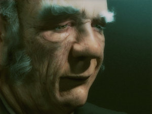

Forums galactiques > Assemblée Galactique : diplomatie officielle > Dépôt des Plaintes contre Commandants
Pages : 1 2 ... 17 18 19 ... 125 126
| Miculow Respect diplomatique : 15  29/08 ETU 16:12 | Score : 0 Détails //hehehe//
Monsieur ,l'humour n'est pas votre domaine ,laissez la moi et d'ailleur se marier à toutes les sauces ne me dérange guerre ,avoir la danrith et etre aussi constipé que vous l'etes par contre oui . Je vous pardonne , n'ayez crainte perdre ce que vous avez bati à votre niveau vous rend soucieux et déprésif,je marque donc votre éllant de courtoisie comme marque de fatigue | ||
| Mansfeld Respect diplomatique : 4380  29/08 ETU 16:39 | Score : 3 Détails *Mansfeld réplique, amusé*
Il est vrai qu'à mon âge, le transit intestinal est chose fastidieuse. Un peu comme vos efforts pour aligner quelques pattes de mouches. Fatigué, je commance à l'être, à tenter de vous trouver quelque chose d'intéressant. Hélas, mon obstination se limite au combat pour la démocratie. Pas à un travail d'assistante sociale. La récré est terminée, commandant. Quand vous aurez fait vos devoirs, vous pourrez peut-être proposer autre chose que vos jérémiades plaintives. Sauf votre respect, biensûr. | ||
| Dantès Respect diplomatique : 149  29/08 ETU 19:13 | Score : 0 Détails Laissez ces querelles de cotés, elle n'ont rien à voir avec le sujet. Et surtout, monsieur "vinaigre", vous ne méritez pas qu'on vous adresse la parole
| ||
| Corum Respect diplomatique : 1323  31/08 ETU 16:19 | Score : 5 Détails Message inutile sans aucun doute..mais comme prévu, la survie de mon peuple n'aura guerre était longue..à peine avions-nous commencé à entrevoir une lumière au bout du tunnel, qu'un commandant hostile aux principes de liberté s'est empressé de couvrir le ciel de notre planète natale d'une nuée de vaisseaux envahisseurs qui assombrirent le ciel tel un jour d'éclipse..
Il ne nous reste sans doute que peu de temps à vivre... tant la violence des conflits fait rage ici-bas et les païens que nous sommes ne peuvent croire en une intervention divine..J'inscrirais donc simplement le nom de la seule et unique planète que j'aurais conquise..et en l'occurrence elle le fut par le coeur:GAÏASPHERE du système 607, tombée aux mains ennemies, comme la quasi-totalité du système, et ce, en moins de deux jours par un dévoreur de monde qui ne daigna même pas répondre à mes demandes de rencontre..hébété qu'il dû être par son insatiable faim de vies..que l'on retienne son nom, ainsi, ceux qui le verront apparaître dans leur environnement sauront que la gangrène qui vient à leur rencontre porte le nom de "PHOENYX"... ne perdez pas de temps en conciliabules amicaux..frapper les premiers, soyez sans pitié..car lui n'en aura pas.C'est l'erreur que j'ai commis et j'en paye dorénavant le prix. Je vais donc finir de mourrir...auprés de mon peuple..adieu commandants ! Le commutateur holographique s'éteint alors que le Magister Corum tire sa hache pour repousser une vague d'assaillants qui pénétre dans la salle des contrôles.. | ||
| Borgnefesse Respect diplomatique : 345  31/08 ETU 22:33 | Score : 1 Détails ** un message holographique de mauvaise qualité est transmit à l'assemblée ** - Borgnefesse y apparait, les lèrves pincées.. -
La gouvernance d'Andoral est profondément affligée par l'événement tragique qui a emporté le commandant Corum Je suis toujours étonné de voir le rôle que la destinée joue dans nos vies. Qui peut dire ce que chaque jour lui réserve? Nous allons au poste de commandement, nous passons du temps en famille, nous pratiquions comme Corum le faisait, à une activité politique qui nous passionne. Nul ne peut jamais prédire quand ni comment notre vie se terminera, mais je présume que tous, nous voudrons mourir vieux, après avoir réalisé tous nos projets. Mais pour certains, ce jour vient beaucoup plus tôt et dans certains cas, soudainement, sans avertissement. Et c’est finalement beaucoup plus difficile pour ceux qui restent. Quel sens donner à une vie si soudainement interrompue; aux adieux que nous ne pourrons jamais prononcer, à la perte tragique qui nous laisse bouche bée? Peut-être qu’il nous est impossible d’en saisir le sens. Mais nous pouvons marquer un temps d’arrêt et remercier Dieu pour les moments que nous avons vécus. Chaque jour de la vie est un miracle, et la perte d’un allié ou d'un ennemi même peut-être celle d'un être dont on a simplement entendu parler sur l'holonet, nous le rappelle de manière éloquente. La vie, telle que nous en faisons l’expérience – telle qu’elle nous est offerte – est imprévisible, remplie d’expériences aléatoires qui suscitent le bonheur, la tristesse, le sentiment d’échec et de réussite – notre existence vécue dans sa plénitude. La vie qui, quelquefois, se termine de façon inattendue et tragique. Je ne pense pas qu’on puisse jauger une vie par sa durée, ou sa réussite, fondée sur un calcul arbitraire du statut, de la richesse ou du pouvoir. J’aime ce vieux dicton qui dit que la vie ne se mesure pas au nombre de fois que nous inspirons, mais à la quantité de moments qui nous inspirent. L'humanité a perdu un grand homme croyez moi...chef d'un des plus grand empire religieux de la période pré-apocalyptique, nous nous sommes combatu sans répis, dans le temps, et il était homme d'honneur, courageux et sans équivoque dans ses paroles... Car aussi longtemps que nous nous rappelons de l’esprit et des réalisations d’un être, celui-ci ne meurt pas vraiment, mais vit à jamais dans le coeur et l’esprit de ceux qui demeurent. Mon vieil ennemi, j'en fait la promesse ton boureaux ne restera pas impunit ! - Borgneffesse, baisse le regard, détourne les yeux - ** La transmission se termine dans un gressillement ** | ||
| Scorbut Respect diplomatique : 1059  01/09 ETU 10:19 | Score : 1 Détails C'est une belle tirade, commandant Borgnefesse. (excusez-moi, j'ai du mal à prononcer votre nom sans être atteint d'une douleur buccale qui m'oblige à faire fonctionner mes zygomatiques... Ne le prenez pas mal)
Ceci dit, je ne sais pas si elle est vraiment de mise (en tout cas, j'espère qu'elle ne l'est pas). J'ai contacté les deux protagonistes lors de la parution dans cette salle du message de détresse du commandant Corum. Il semble que Phoenyx ait effectivement enfreint la DGDF en envahissant toutes les planètes de son système. Or, Phoenyx m'énerve au plus haut point (comme on dit chez moi, à euphémisme, euphémisme et demi). Je suis donc en train de soutenir le magister Corum dans son combat pour récupérer une planète, et j'ai l'espoir que ce système s'ouvre au plus vite, histoire d'aller faire comprendre à Phoenyx qu'il m'énerve. Donc, pour le moment, le commandant Corum est toujours des nôtres. J'espère que vous aurez l'occasion de revoir votre cher ennemi, Messire Borgnefesse. (arrrhhh, foutu sourire...) Scorbut forever | ||
| Borgnefesse Respect diplomatique : 345 01/09 ETU 14:01 | Score : 1 Détails Vous m'en voyez bien soulager ( s'étrangle presque )...
J'ose espérer que le Magistère Corum, ne va pas le prendre comme un entrement prématuré, si cela devait être le cas, je lui présente mes plus plate excuse... Merci pour votre avertissement "Scorbut" ( pince les lèvre pour ne pas sourir ^^ ), je vous en suis redevable. | ||
| Nymphe Respect diplomatique : 75  01/09 ETU 20:28 | Score : 0 Détails Bonjour.
Je me plain de l'attaque de l'un de mes domaines sylvestre par le commandant laly. Aucune explication donnée. Selon mes experts, ce serais le point de départ d'une invasion kamikazes. | ||
| Grosjojo Respect diplomatique : 37  01/09 ETU 21:12 | Score : 0 Détails Valorys, occupe-t'en, siteplé...
J'étais dans le système de Nymphe avec des CLI aux PC 2, 3, 4 et 5 prèts à bombarder le PC 1 pour protéger la belle Nymphe... J'ai vu laly et j'ai tiré ^^ Malheureusement, ça l'a pas fait dégager... Maintenant, elle attaque Nymphe... Je m'en vais, moi... Qui va fa protéger ??? | ||
| Commandeur Valorys Respect diplomatique : 865  01/09 ETU 22:10 | Score : 0 Détails Se levant aidé de sa canne
Ma chère Nymphe, connaissant la commandante Laly il s'agit certainement d'une maiprise. Conatctez la par MP et en cas de non réponse ou si le problème perciste contactez moi. | ||
| laly Respect diplomatique : 22  01/09 ETU 23:04 | Score : 4 Détails Très chère nymphette!
j'implore à genou votre pardon!!! Quelle manque de savoir vivre de ma part! Tout de même, ne pas avoir daigné vous répondre,alors que... que quoi déjà?....euh... ah si... alors que vous ne m'avez pas encore contacté? Comment? mes vielles oreilles entendent des chuchotements. Parlez plus fort s'il vous plait!merci. un problème dans ma phrase? Pourtant, je vous assure:je n'ai reçu aucun message de notre chère et innocente petite Nymphe. Mais peut êtr devrais-je m'installer dans cette salle et ne plus y bouger.On ne sait jamais: des commandants contre lesquels mes généraux se sont battus pourraient avoir envie de me contacter! Non,vous avez raison,pas la peine, les Bisounours n'ont pas l'habitude de se plaindre pour des broutilles. ils sont plus francs en général. (Se dirige vers la porte, puis se retourne brusquement) Pardon j'ai failli oublier.mea culpa! Comme c'est ma derniere intervention dans cette assemblée,je vais tenter d'éclaircir un peu la situation. Non ma petite Nymphe, je ne crois pas que vous méritez une réponse.j'essaie juste de prévenir les autres commandants contre vos charmes. Mais pourquoi ai-ja envoyé des vaisseaux chez notre victime? Parceque c'était une protégée de nos bisounours? Ou bien est-ce parce que de retour de vacances, un membre de ma coalition m'annonce qu'il n'a plus une seule planète,que son natal est sous le controle de Nymphe? Quelle déception pour ce pauvre malheureux.Il vous aimait bien au départ!Piet Von Karamoko,son nom vous dit quelque chose? Choisissez une réponse Nymphe!(Ne vous inquiétez pas.quelque soit votre choix, ce sera le bon) | ||
| Nymphe Respect diplomatique : 75 02/09 ETU 11:54 | Score : 0 Détails (J'oublie toujours de faire des MP, sait pas pourquoi. Ya un docteur dans la salle ?)
Ben, pour les bisnounours, j'était copine avec Grosjojo, en dehors du fait que c'était le méchant pas beau du coin, il était sympa. Ensuite, pour Piet, j'ai rien demandé ! Je part en villiégiature une semaine, et en rentrant à mon palais forestier, je vois que Grosjojo m'a laissez le message suivant : "Tu veux que je face place nette dans ton natal ?" J'avais déjà lié contact avec Piet, on s'entendait bien. Alors j'ai répondu :"***** non ! C'est un pote !" Mais en regardant dans ma carte galactique, je vis qu'il était trop tard. Mais Piet m'ayant fait part de son intention de se retirer sur une île déserte et d'y regarder les infos galactiques (c'est un image, attention), je me suis dit que cela n'avait pas grandes conséquences, bien que je me sois rongées les ongles en espérant un message de lui. Puis plus rien. Enfin mise à part votre attaque quoi. | ||
| Grosjojo Respect diplomatique : 37 02/09 ETU 12:03 | Score : 0 Détails EXPLDR
C'est moi qui ai buté ton Karamoko ^^ Nymphe m'a rien demandé.. Ma petite laly, quand je vais revenir, j'aurais des alliés, fous la paix à Nymphe, ton Karamoko, j'en ai rien à cirer ^^ Nymphe, t'en fais pas, cette gueuse ne restera pas impunie... Je pars maintenant, adieu ! | ||
| Sandalphon Respect diplomatique : 592  04/09 ETU 15:31 | Score : 4 Détails Je ne viens pas ici pour me plaindre ou demander de l'aide, contrairement à ce qu'on pourrait croire en voyant l'intitulé de cette salle, mais pour vous informer.
Pour informer cette galaxie du comportement d'un de ses commandants, pourtant autrefois digne et respectable à mes yeux. Le commandant Akira s'est en effet conduit récemment d'une manière honteuse, et je tenais à vous informer de la situation actuelle. Ancien Lieutenant des FSIG de la regrettée Capitaine Kortzanov, aux côtés de Chacomat, Akira a tenté de recréer après la mort de celle-ci une coalition ayant la même formation, les mêmes membres. Mais en raison de l'abscence à ce moment-là de trop nombreux ex-FSIG, cette coalition fut dissoute, et le commandant cassenoisettes et moi avons suivi nos chemins respectifs, qui m'a mené pour ma part à rejoindre les Orphelins de Ketze, et à tisser des liens avec la Confédération de Deldrimor, du Commandeur Valorys. Pendant cette période, j'ai appris en même temps que d'autres que le commandant Akira avait rejoint la Fondation, l'"école" pour jeunes commandants de Jafnhar, le désormais tristement célèbre... Les soupçons de l'existence d'un espion au sein des FSIG avaient autrefois entaché l'ambiance au sein de cette coalition, et je ne pus m'empêcher à l'époque d'y penser en apprenant la nouvelle allégeance d'Akira. Mais la Fondation étant une façade respectable, je mettais ce revirement sur le compte de la volonté sincère d'Akira d'aider Jafnhar à éduquer de jeunes commandants. Mais lors de la tentative de coup d'état commune par Jafnhar et les Bisounours, alors que les conflits faisaient rage, et que les entrées en guerre se multipliaient, Akira, avec lequel je n'avais plus de relations, et contre lequel je n'étais pas en guerre, s'empara d'une de mes planètes dans un de mes systèmes communs avec Jafnhar. Vu le chaos qui régnait alors, j'avais noté cet incident, mais n'avait pas relevé, ne voulant pas compliquer encore la situation. Puis peu après la fin de la guerre, Akira me reprit une planète voisine de la précédente, que je possédais d'ailleurs depuis bien avant la guerre, cette fois. Je le contactais donc il y a peu pour le prier de me rendre la planète en question (la deuxième). Quelques jours après, il me la cédait en échange de 50 000 leems ! Sans un mot d'explication... Je lui ai fait part de ma colère devant cette tentative lamentable de bas profit, en lui faisant valoir que j'en étais le propriétaire légitime, et qu'à sa place, la discretion était de mise... Je lui expliquai que s'il tardait encore à me la rendre je la reprendrai moi-même, ma patience ayant ses limites. Peu de temps après, toujours sans réponse ou justification de sa part, il me repropose la planète en question... en échange de 10 000 leems cette fois ! Je lui ai donc envoyé ce matin un MP lui déclarant que je reprenais ma planète de force, ainsi que la première qu'il m'avait envahie en profitant du chaos général. J'estime avoir fait preuve de beaucoup de patience et de diplomatie, et tenait à vous informer de la situation avant qu'une plainte éventuelle de sa part ne vous parvienne. Ses manières indignes ne font que me conforter dans l'idée qu'il était depuis le début un espion de Jafnhar chez Kortzanov, puisque Jafnhar avait un espion dans chaque coalition, voir plusieurs (au passage, j'aimerais que le nouveau chef des Humanoïdes Républicains se manifeste à moi, j'ai certaines choses à lui dire...). Merci de votre attention, commandants. | ||
| Mansfeld Respect diplomatique : 4380 04/09 ETU 16:13 | Score : 1 Détails Je pense qu'il est temps de s'occuper urgemment de tous ces commandants qui profitent de l'instabilité politique actuelle pour enfeindre le Droit intergalactique.
Le général Weiss m'a communiqué un rapport sur la situation actuelle, et nous constatons que les quelques commandants suivants ont attaqué des systèmes libres récemment recensés : -Phoenyx -Chef de meute Ces deux commandants semblent bénéficier d'une aide logistique importante, héritée des anciens dictateurs ou du commandant Jafnhar. Ils attaquent et tentent de détruire des jeunes commandants en toute impunité. Je partage les analyses du général Weiss, qui en mon absence, a dénoncé la situation inacceptable du commandant Corum. Le général Weiss a également lancé une procédure de vote indépendante du gouvernement dont les résultats prouvent qu'une majorité de commandants refusent ces pratiques barbares et qu'ils sont prêts à s'engager contre les actes illicites des commandants incriminés. Je demande à ces commandants de cesser leurs attaques, et de s'exprimer sur la situation. Je ne partage pas l'avis du général Weiss, qui prône une intervention militaire, mais je demande aux membres de cette assemblée d'intervenir par la voie diplomatique afin de raisonner ces commandants belliqueux. Je garantis qu'ils seront écoutés, et qu'ils auront droit à se défendre si une procédure de procès est entreprise à leur encontre. Je leur propose de rendre, en signe de bonne volonté, la planète natale de leur victime. Ceci pourra constituer un premier pas vers une résolution pacifique du conflit. | ||
| Lizaka Respect diplomatique : 2723  04/09 ETU 16:28 | Score : 0 Détails Je leur propose de rendre, en signe de bonne volonté, le système natal de leur victime.
Ils ont justement le même système natal, c’est bien ça le problème et la raison du conflit. | ||
| Requiem Respect diplomatique : 1538  04/09 ETU 16:29  | Score : 0 Détails Le commandant Requiem prit la parole, énervé:
Et alors? ils peuvent toujours le partager non? | ||
| Mansfeld Respect diplomatique : 4380 04/09 ETU 16:29 | Score : 0 Détails Erreur de ma part, message édité. Je parlais des planètes natales.
Toutes mes excuses. | ||
| Chef de Meute Respect diplomatique : 249  04/09 ETU 16:45 | Score : 3 Détails *s'avance, oreilles pointées vers Mansfeld*
Ceci est le territoire de la Meute ! La Meute n'a pas encore l'hyperfusion et n'a aucun lien avec ce fourbe phoenyx... Pourquoi accuse-t-on la Meute ? Elle cherche simplement à rendre son système natal plus sécurisé... Sénateur Mansfeld, vous avez entaché l'honneur de la Meute... *se retire, la queue basse* | ||
| Mansfeld Respect diplomatique : 4380 04/09 ETU 16:51 | Score : 1 Détails Commandant chef de meute,
Attaquer la planète natale d'un jeune commandant n'est pas un acte honorable, d'autant plus que le commandant Nighteyes que vous attaquez est un partisan de la non-violence et de l'action diplomatique. Je n'ai pas signifié, il me semble, que vous étiez allié au commandant Phoenyx. Je vous propose de cesser vos attaques, et d'exprimer clairement quelles sont vos revendications afin de trouver une issue honorable et non-violente au conflit que vous êtes en train de générer. Je vous préviens cependant que vous n'avez pas le droit de détruire le commandant Nighteyes, et que selon la constitution, il a minimum droit à cinq planètes dans votre système commun. Vous pourriez plutôt essayer de négocier et d'engager le dialogue plutôt que d'attaquer lâchement et par surprise l'un de vos voisins. Soyez raisonnable, et acceptez la solution diplomatique que je vous propose. |
Pages : 1 2 ... 17 18 19 ... 125 126
Forums galactiques > Assemblée Galactique : diplomatie officielle > Dépôt des Plaintes contre Commandants